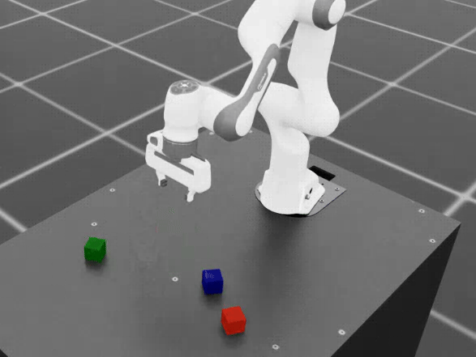
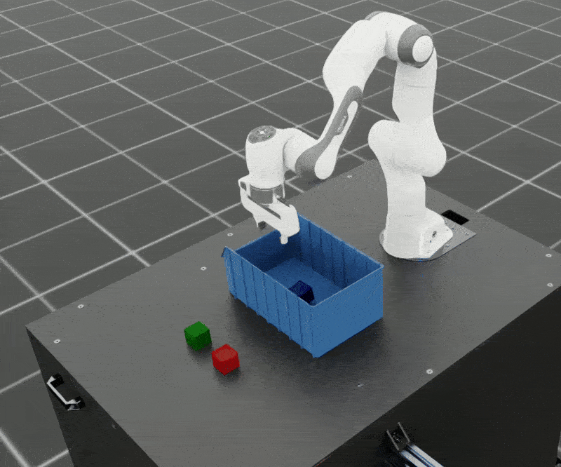
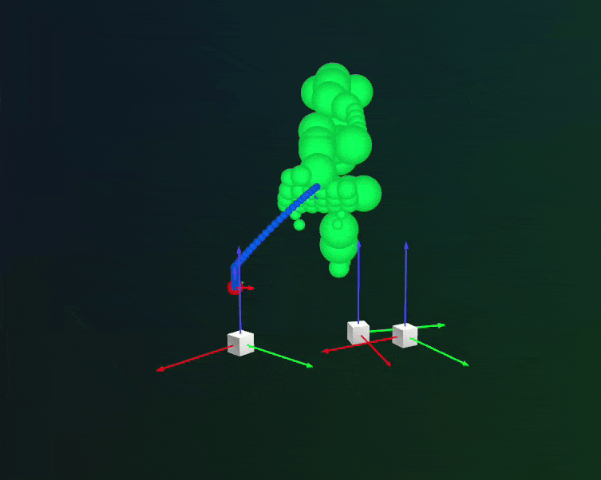

SkillGen: Motion-Planned Data Generation#
SkillGen augments MimicGen-style generation with collision-aware, GPU-accelerated motion planning (cuRobo). Instead of interpolating the end-effector between subtasks, SkillGen plans a collision-free transit motion to each skill segment’s start, then replays the segment. Compared to plain MimicGen this gives:
Motion quality — transitions are smooth, kinematically feasible robot motions instead of straight-line pose interpolations.
Collision awareness — planned transits avoid the scene and whatever the gripper is holding; interpolation is blind to both.
Adaptability — because transitions are planned fresh each trial, the same annotated demonstrations keep working when object placements move far from the source demonstration — or into cluttered scenes where interpolation would collide.
This page walks through two tasks: plain cube stacking, and cube stacking inside a bin — a cluttered variant created from the same base task with an environment profile, generated from the same annotated dataset.
{kind=link}

Cube stacking demonstrations generated with SkillGen.#
How SkillGen Works#
MimicGen bridges between subtasks by linearly interpolating the end-effector pose — fast, but blind: the interpolated path can sweep through obstacles, and its quality degrades the further the new object poses are from the source demonstration’s. SkillGen splits every subtask into two phases instead:
Transit — a cuRobo-planned, collision-free motion from the current end-effector pose to the (transformed) start of the subtask’s skill segment. Grasped objects are attached to the robot’s kinematic chain during planning, so a held cube is itself collision-checked.
Skill — the human demonstration segment, transformed and replayed as in MimicGen.
Each generation trial then runs this pipeline:
Reset. The environment resets and randomizes the cube placements; the initial state is snapshot for the output episode.
Select and transform. For the current subtask, a source skill segment is chosen (nearest-neighbor over reference-object poses by default) and rigidly transformed to the reference object’s current pose. The segment’s entry point is randomized within the descriptor’s offset ranges.
Plan. The planner syncs its collision world to the live scene — attaching the held object, if the subtask expects one — and plans a collision-free transit from the current end-effector pose to the segment’s start. If planning fails, the trial is abandoned and counted as a failure.
Execute. The transit waypoints are executed, then the skill segment replays with per-step action noise for diversity.
Record. The task’s success condition is checked every step; successful trials are exported to the output dataset.
Because the planner needs to know exactly where skills begin, SkillGen requires subtask
start signals in addition to termination signals. In the task descriptor this means every
subtask — including the final one — must name a subtask_term_signal: the name does double
duty as the key for that subtask’s start signal. The final subtask itself still ends with the
trajectory, as in MimicGen, and never needs a termination mark. Cross-subtask constraints, if
any, apply only during the skill phase; transit is constraint-free.
Workflow at a Glance#
The SkillGen workflow has the same four steps as the MimicGen workflow — but only the first and last are identical:
Step |
Compared to MimicGen |
|---|---|
1. Record |
Identical. Teleoperate the robot and record demonstrations exactly as in Step 1: Record Source Demonstrations — or skip this step and use the pre-annotated dataset that ships with the repository. |
2. Annotate |
SkillGen-specific. Manual annotation only, and each subtask needs a start mark in addition to the termination marks (see below). |
3. Generate |
SkillGen-specific. |
4. Validate |
Identical. |
Prerequisites#
SkillGen requires the cuRobo container image. cuRobo’s CUDA kernels are compiled for your
GPU architecture at image build time (auto-detected via nvidia-smi; override with
TORCH_CUDA_ARCH_LIST):
./docker/run_docker.sh -c
Warning
cuRobo kernels are compiled for the GPU you build the image on. If you later run on a
different GPU generation, rebuild with ./docker/run_docker.sh -c -r.
Note
The first SkillGen run needs network access: the planner downloads the Franka robot model (URDF) from the Nucleus asset server when it initializes.
The Task Descriptor for SkillGen#
Compare franka_cube_stack_skillgen.yaml with the MimicGen version of the same task. The differences are characteristic:
algo: skillgenandgeneration_policy.use_skillgen: true.Every subtask names a
subtask_term_signal— including the final one (stack_2). The name keys the subtask’s start signal, which is why the final subtask needs one even though it still ends with the trajectory.num_interpolation_steps: 0— transit replaces interpolation.Per-subtask
algo_paramsmay setsubtask_start_offset_rangeto randomize where the skill segment is entered.
Annotating for SkillGen#
SkillGen datasets need a start mark for every subtask and a termination mark for every subtask except the last (which ends with the trajectory). A skill segment should cover the contact-rich part of a subtask — the final approach, the grasp, the placement — and everything between a termination and the next start becomes plannable transit.
Annotation is manual: each episode replays in the simulator viewer, and you mark signals with the keyboard.
python scripts/annotate_demos.py \
--env_name Isaac-Stack-Cube-Franka-IK-Rel-v0 \
--task_descriptor isaac_autodata_examples/tasks/franka_cube_stack_skillgen.yaml \
--embodiment isaac_autodata_examples/embodiments/franka_ik_rel_skillgen.yaml \
--input_file ./datasets/dataset_franka.hdf5 \
--output_file ./datasets/dataset_franka_skillgen_annotated.hdf5
Key |
Action |
|---|---|
|
Begin / resume playback |
|
Pause playback |
|
Mark a subtask signal at the current step |
|
Skip the current episode |
With use_skillgen: true in the descriptor, the tool expects the marks to interleave —
start, termination, start, termination, … — ending with the final subtask’s start. For the
four-subtask cube-stack task that is 7 marks per episode, in this order:
Start of
grasp_1— the gripper begins its final approach to the red cube.Termination of
grasp_1— the red cube is securely grasped.Start of
stack_1— the placement onto the blue cube begins.Termination of
stack_1— the red cube rests on the blue cube, gripper released.Start of
grasp_2— the final approach to the green cube begins.Termination of
grasp_2— the green cube is securely grasped.Start of
stack_2— the placement onto the red cube begins.
Tip
Pause with B a few steps before the skill begins, mark the start with S, and
resume with N; once the interaction completes, pause again a few steps later and mark
the termination. If the number of marks does not match the expected count, the episode
simply replays for re-marking.
Tip
A major advantage of SkillGen: because transitions are planned rather than replayed, one annotated dataset can drive multiple task variants. Both tasks on this page — plain stacking and stacking inside a bin — generate from the same annotated cube-stack dataset.
Note
Automatic annotation (--auto) only produces termination signals and therefore cannot
be used for SkillGen datasets yet. To skip annotation entirely, use the pre-annotated
dataset that ships with the repository.
Note
The SkillGen embodiment config differs from the MimicGen one only in eef_offset
([0, 0, 0.1034]): the SkillGen source dataset is annotated in the Franka
panda_hand frame rather than the inter-fingertip frame, and the offset reconciles the
two. See Embodiments.
Task 1: Cube Stacking#
Environment name: Isaac-Stack-Cube-Franka-IK-Rel-v0
A Franka arm stacks three cubes on a table — red on blue, then green on red. This is the same environment as the MimicGen workflow; the SkillGen-specific end-effector frame is carried entirely by the embodiment config, not by a dedicated task.
Property |
Value |
|---|---|
Algorithm |
SkillGen (single end-effector, cuRobo motion planning) |
Embodiment |
Franka, relative IK task-space actions (7-D: delta pose (xyz, rpy) + binary gripper open/close) |
Task descriptor |
|
Embodiment config |
|
Subtasks |
Grasp red cube ( |
Pre-annotated source dataset |
|
Start small to verify the setup, using the pre-annotated source dataset:
python scripts/generate_dataset.py \
--env_name Isaac-Stack-Cube-Franka-IK-Rel-v0 \
--alg skillgen \
--task_descriptor isaac_autodata_examples/tasks/franka_cube_stack_skillgen.yaml \
--embodiment isaac_autodata_examples/embodiments/franka_ik_rel_skillgen.yaml \
--input_file ./datasets/annotated_datasets/dataset_franka_skillgen_annotated.hdf5 \
--output_file ./datasets/generated_dataset_skillgen_franka.hdf5 \
--generation_num_trials 10 \
--num_envs 1 \
--viz none
When motion planning fails for a trial — no collision-free path to the skill start — the
trial is abandoned and counted as a failure; with guarantee_success: true generation
simply retries with a new scene configuration until the trial target is met.
For a full-scale run, raise --generation_num_trials (hundreds to thousands for policy
training) and keep --viz none — rendering slows generation considerably. See
Performance and Scaling before choosing --num_envs.
Validate the generated dataset the same way as any other:
python scripts/validate_dataset.py ./datasets/generated_dataset_skillgen_franka.hdf5
Task 2: Cube Stacking in a Bin (Environment Profile)#
The second task drops a narrow sorting bin into the scene: the blue cube sits fixed inside the bin, and the robot must stack the red and green cubes onto it without colliding with the bin walls — a task where MimicGen’s straight-line interpolation would routinely collide, and exactly what SkillGen’s planned transits are for.
{kind=link}

Bin cube stacking: same annotated dataset, planned around the bin.#
Modifying a task with an environment profile#
There is no dedicated bin-stack environment. Instead, an environment profile — a YAML
overlay applied with --env_profile — turns the plain cube-stack task into the bin variant
at env-creation time (see Environment Profiles for the full schema).
A profile can:
add objects to the scene (
scene.rigid_objects.add— spawn a USD asset with pose, scale, and physics properties),override existing objects (
scene.rigid_objects.override— e.g. stiffer contact solving for cubes settling against the bin walls),replace reset randomization (
events.remove/events.add— e.g. pin the bin and blue cube at the table center, randomize the other cubes outside the bin),name the motion-planner profile (
planner) tuned for the modified scene.
Abridged from franka_bin_stack.yaml:
name: franka_bin_stack
base_env: Isaac-Stack-Cube-Franka-IK-Rel-v0
planner: franka_stack_cube_bin # planner profile tuned for the bin scene
scene:
rigid_objects:
add:
blue_sorting_bin:
prim_path: "{ENV_REGEX_NS}/BlueSortingBin"
usd_path: "{ISAACLAB_NUCLEUS_DIR}/Mimic/nut_pour_task/nut_pour_assets/sorting_bin_blue.usd"
position: [0.4, 0.0, 0.0203]
scale: [1.1, 1.6, 3.3]
override:
cube_1: {rigid_props: {solver_position_iteration_count: 40}}
events:
remove: [randomize_cube_positions]
add:
reset_blue_bin_pose: # pin the bin (and cube_1) at the table center
...
reset_cube_pose: # randomize cube_2 / cube_3 outside the bin
...
The bin task also gets its own task descriptor
(franka_bin_stack_skillgen.yaml):
same subtasks as cube stacking, but action_noise: 0.0 — the bin walls leave little
clearance for perturbed skill segments.
Generating the bin dataset#
Note the reused annotated dataset — only the descriptor and the --env_profile flag
change:
python scripts/generate_dataset.py \
--env_name Isaac-Stack-Cube-Franka-IK-Rel-v0 \
--alg skillgen \
--task_descriptor isaac_autodata_examples/tasks/franka_bin_stack_skillgen.yaml \
--env_profile isaac_autodata_examples/env_profiles/franka_bin_stack.yaml \
--embodiment isaac_autodata_examples/embodiments/franka_ik_rel_skillgen.yaml \
--input_file ./datasets/annotated_datasets/dataset_franka_skillgen_annotated.hdf5 \
--output_file ./datasets/generated_dataset_skillgen_franka_bin.hdf5 \
--generation_num_trials 10 \
--num_envs 1 \
--viz none
The generation-result JSON (--result_file) records the applied profile, since the output
dataset itself only stores the base env id.
Warning
Adaptive tasks like bin stacking have lower success rates and longer generation times than the plain variant: the planning problems are harder (narrow bin clearances) and more trials are rejected. Budget accordingly — see the numbers below.
To adapt a task of your own, copy franka_bin_stack.yaml and adjust: pick the base_env,
add/override scene objects, swap the reset events, and point planner at a planner profile
that treats your new objects as collision geometry (see
Motion Planners for defining one).
Performance and Scaling#
--num_envs trades GPU memory for throughput: one cuRobo planner is created per
environment. Indicative figures, measured with the equivalent SkillGen pipeline in Isaac Lab
Mimic on an RTX 6000 Ada (48 GB), headless:
Metric |
Indicative value |
|---|---|
VRAM, 1 env |
~9.5 GB steady (briefly higher during initialization) |
VRAM, 5 envs |
~22 GB steady |
1000 demos, cube stack, 1 env |
~90–120 minutes |
1000 demos, bin stack, 1 env |
~220 minutes |
Generation success rate |
typically 40–70 % with a well-annotated dataset |
Practical guidance:
Start with
--num_envs 1and increase gradually; around 5 envs is a sweet spot balancing planner memory against simulation throughput — gains beyond that are small.Prefer a GPU with ≥24 GB VRAM for 1–2 envs and ≥48 GB for ~5 envs.
Generation time scales with the demo target and the success rate, which depends mostly on annotation quality — verify a small batch before launching a long run.
Visualizing and Debugging Plans#
Pass --visualize_plan to stream SkillGen’s planned trajectories to a
Rerun viewer — useful for diagnosing planning failures, unexpected
detours, or collision-world mismatches before committing to a long generation run:
{kind=link}

Rerun visualization of SkillGen motion plans.#
During multi-env generation only env 0 is visualized, to keep the simulation responsive.
Since the Rerun viewer is independent of the simulator window, --visualize_plan works
together with --viz none.
Motion Planner Configuration#
The cuRobo planner (robot config, collision world, attached-object handling, planning seeds)
is resolved per task — or per environment profile, via its planner field — and is fully
configurable. See Motion Planners.